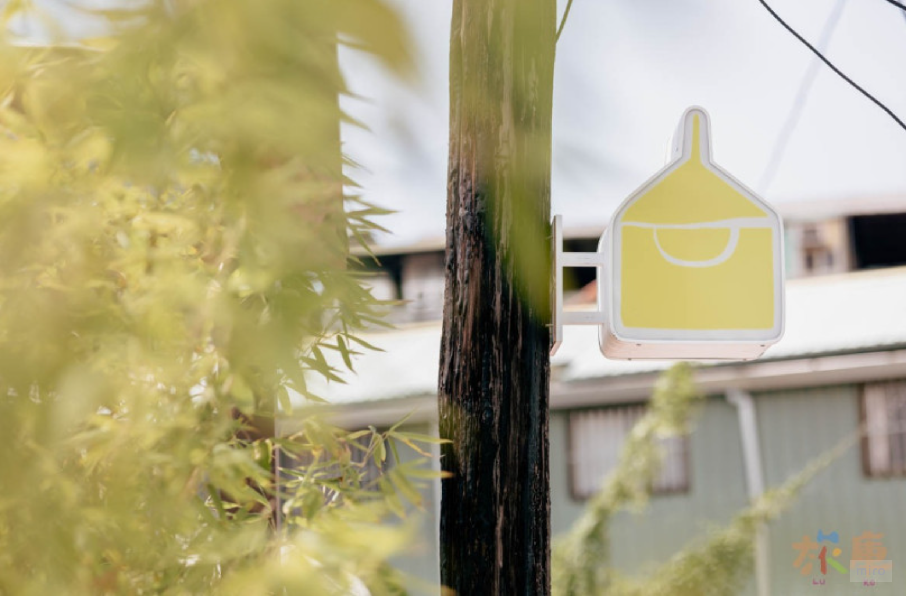
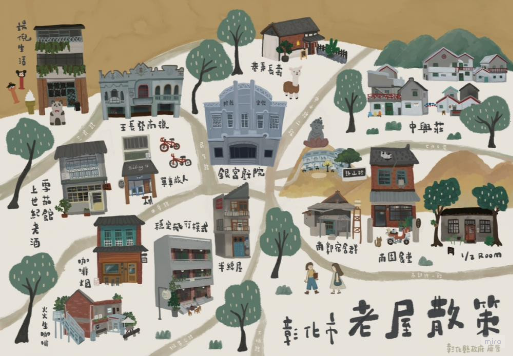
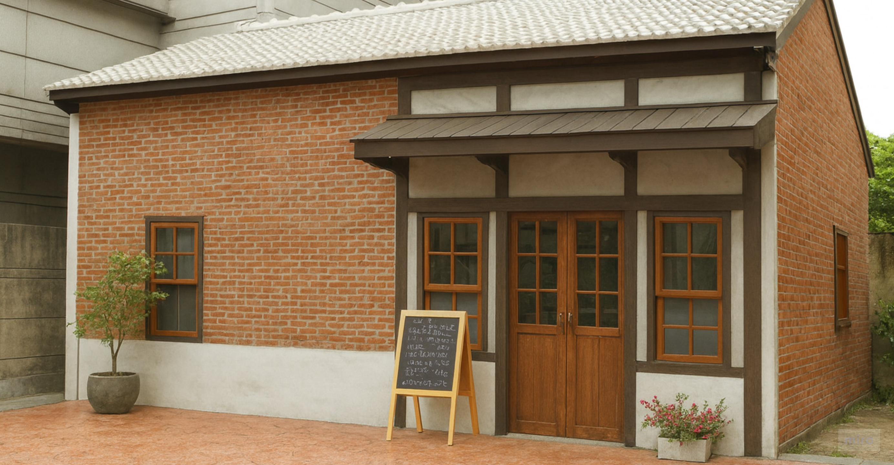
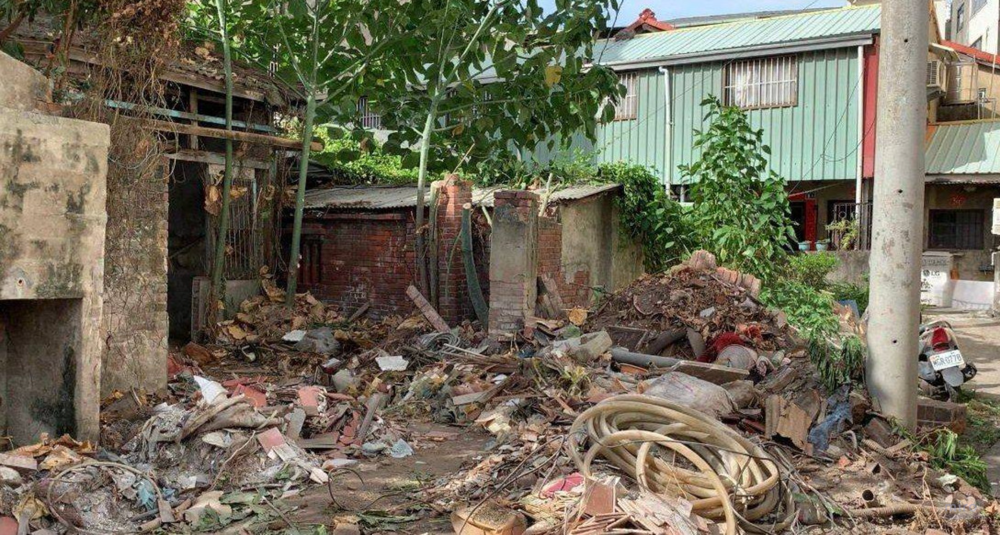
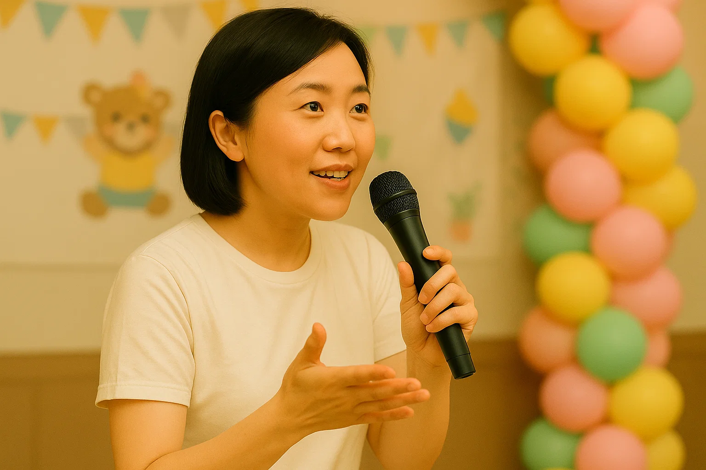
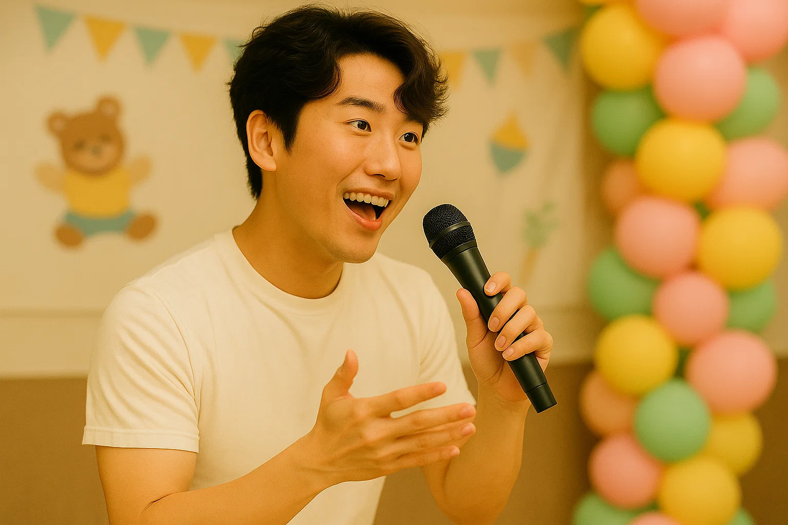
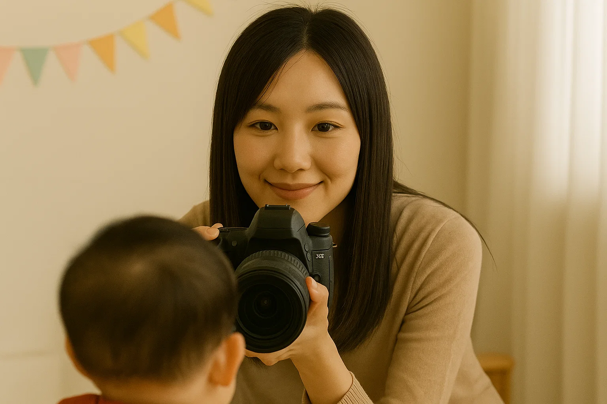
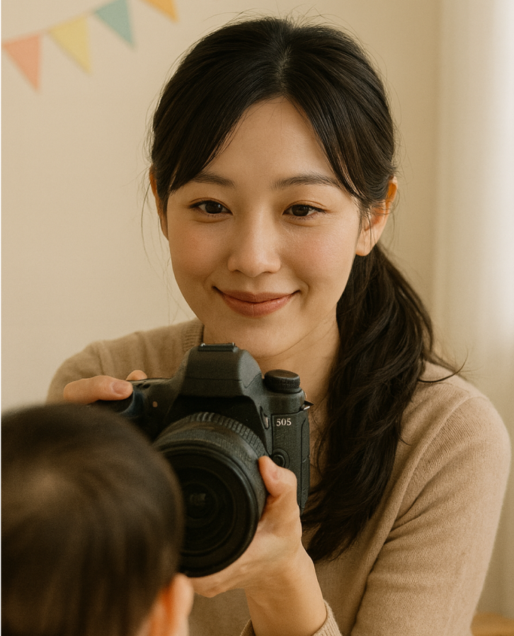
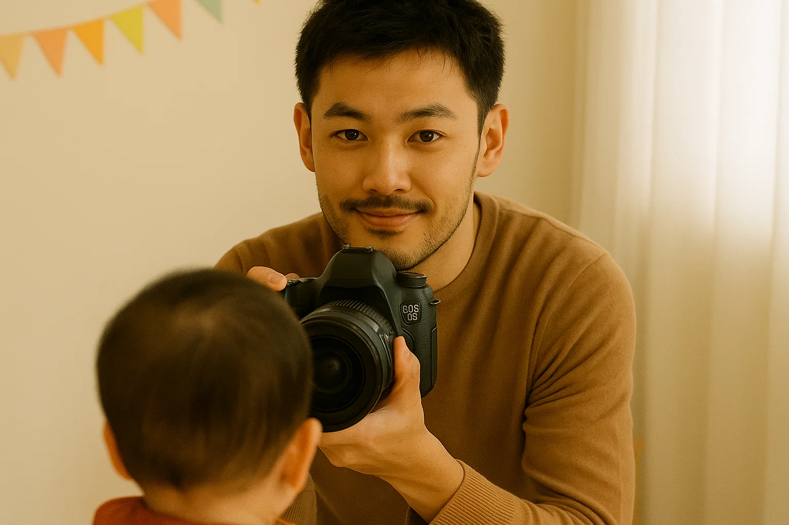

藏身在台北鬧區巷弄中，一間有故事的老屋變身成溫馨派對場地。這裡保留著老台灣建築的溫度，融合現代簡約設計，是專為小型家庭儀式、抓周派對、朋友聚會打造的秘密基地。
查看更多
為了讓每位媽媽都能安心地籌辦寶寶的重要時刻，我們重新梳理了服務內容，明確聚焦在「性別派對」、「抓周」、「收涎」等家庭儀式，並結合我們最拿手的老屋空間布置，讓活動不只是紀念，更充滿儀式感。
查看更多
2024 年，我們迎來了第 100 場派對。每一次寶寶的抓周、每一場性別揭曉，都是媽媽們用心的準備與我們的細緻承接也因為你們的回饋與信任，我們優化了預約流程、推出更多主題套組，讓每一場儀式感都能被輕鬆實現。謝謝你們把人生的第一次交給我們，我們會繼續用心，陪伴更多家創造難忘的回憶。
查看更多





